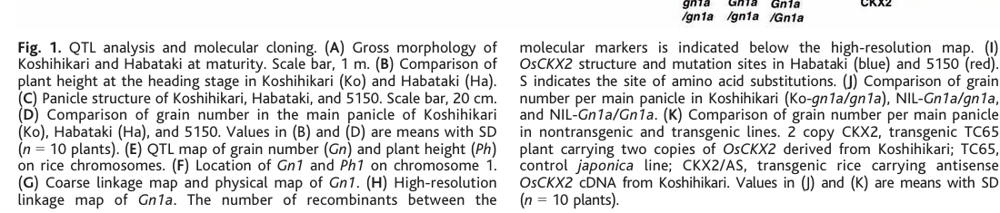

OsCKX2 (Q4ADV8), also known as cytokinin oxidase/dehydrogenase 2 and as the grain-number QTL Gn1a, is a secreted FAD-linked flavoenzyme of the oxygen-dependent FAD-linked oxidoreductase family that catalyses the IRREVERSIBLE DEGRADATION of cytokinins (EC 1.5.99.12). It oxidatively cleaves the unsaturated N6-isoprenoid side chain of nucleobase cytokinins (e.g. N6-(dimethylallyl)adenine / isopentenyladenine), producing adenine and the corresponding aldehyde (3-methyl-2-butenal), thereby inactivating the active hormone. OsCKX2 is therefore a hormone-CATABOLISM (homeostasis) enzyme, not a component of the cytokinin signal-transduction machinery: it modulates the size of the available bioactive cytokinin pool rather than transducing the cytokinin signal (which is the role of the two-component AHK receptor -> AHP -> type-B ARR cascade). The enzyme was cloned as the major QTL Gn1a controlling rice grain number: reduced OsCKX2 expression or loss-of-function causes cytokinin accumulation in inflorescence (panicle) meristems and increases the number of reproductive organs, raising grain yield (Ashikari et al. 2005, PMID:15976269). It is highly (and preferentially) expressed in inflorescence meristems, leaves, culms and flowers, especially in vascular tissues, and its expression level correlates inversely with grain number. RNAi knockdown and CRISPR knockout independently confirm this negative-regulator role and link reduced OsCKX2 to higher tiller/grain number, delayed senescence and improved drought/salinity-stress yield maintenance (Joshi et al. 2018; Yeh et al. 2015; Rashid et al. 2024). The enzyme is a precursor with an N-terminal signal peptide and is predicted to be glycosylated and secreted to the extracellular space (UniProt). FAD is the catalytic cofactor, bound covalently via an 8-alpha-FAD histidine (His113) within the FAD-binding PCMH-type domain.
| GO Term | Evidence | Action | Reason |
|---|---|---|---|
|
GO:0009736
cytokinin-activated signaling pathway
|
IEA
GO_REF:0000043 |
MARK AS OVER ANNOTATED |
Summary: SPKW (GO_REF:0000043) annotation derived from the UniProt keyword "Cytokinin signaling pathway"; snapshot-only, removed in the current GOA release. OsCKX2 is a cytokinin-DEGRADING flavoenzyme (cytokinin oxidase/dehydrogenase, EC 1.5.99.12) - a hormone-catabolism enzyme - and is NOT a component of the two-component cytokinin signal-transduction cascade (AHK receptors -> AHP -> type-B ARR transcription factors).
Reason: GOA's removal of this annotation was JUSTIFIED. The keyword "Cytokinin signaling pathway" maps OsCKX2 to "cytokinin-activated signaling pathway" (GO:0009736), but this confuses hormone METABOLISM with hormone SIGNALING. OsCKX2 catalyses the irreversible oxidative degradation of cytokinins - it cleaves the N6-isoprenoid side chain of nucleobase cytokinins to inactivate the hormone (EC 1.5.99.12) - and thereby controls the LEVEL of bioactive cytokinin available; it does not act in the perception or transduction of the cytokinin signal (the AHK/AHP/ARR two-component relay). Its experimentally demonstrated role is enzymatic: reduced OsCKX2 expression causes cytokinin ACCUMULATION in inflorescence meristems and more reproductive organs [PMID:15976269], the hallmark of a catabolic enzyme acting on the hormone pool, not of a signaling-pathway component. Annotating a catabolic enzyme to "cytokinin-activated signaling pathway" is a clear over-annotation (a metabolic enzyme mislabelled as a signal-transduction component). The genuine biology is better captured by the catabolic process term "cytokinin catabolic process" (GO:0009823) and the molecular function "cytokinin dehydrogenase activity" (GO:0019139), both retained/proposed elsewhere in this review. Removal of the signaling-pathway term loses no correct biology. Joshi et al. (2018) reinforce this: they describe OsCKX2 as a "cytokinin oxidase" that "catalyse[s] irreversible degradation of cytokinins and hence modulate[s] cellular cytokinin levels", and show it "regulates floral primordial activity" by "controlling cytokinin levels" - i.e. it acts on the size of the hormone pool, which is hormone metabolism, not signal transduction [PMID:28337744].
Supporting Evidence:
PMID:15976269
a gene for cytokinin oxidase/dehydrogenase (OsCKX2), an enzyme that degrades the phytohormone cytokinin
PMID:15976269
Reduced expression of OsCKX2 causes cytokinin accumulation in inflorescence meristems and increases the number of reproductive organs
PMID:28337744
Cytokinin oxidases catalyse irreversible degradation of cytokinins and hence modulate cellular cytokinin levels
PMID:28337744
OsCKX2, via controlling cytokinin levels, regulates floral primordial activity modulating rice grain yield under normal as well as abiotic stress conditions
file:ORYSJ/CKX2/CKX2-deep-research-falcon.md
Their steady-state levels depend on biosynthesis, interconversion among nucleobase/nucleoside/nucleotide forms, conjugation, transport, and **irreversible degradation**.
file:ORYSJ/CKX2/CKX2-deep-research-falcon.md
**CKX2 (OsCKX2; Gn1a)** encodes a cytokinin oxidase/dehydrogenase that **irreversibly degrades cytokinins**, thereby controlling cytokinin homeostasis in **inflorescence meristems and developing panicles**
|
|
GO:0003824
catalytic activity
|
IEA
GO_REF:0000002 |
MODIFY |
Summary: IEA annotation from InterPro (IPR016164, FAD-linked oxidase-like C-terminal) giving the root catalytic-activity term. OsCKX2 is an enzyme, so the term is correct but uninformative.
Reason: "Catalytic activity" is the top-level molecular-function grouping term and carries no information about what reaction OsCKX2 catalyses. The specific catalytic function - cytokinin dehydrogenase/oxidase activity (EC 1.5.99.12) - is demonstrated directly [PMID:15976269] and is annotated elsewhere in this review (GO:0019139). The annotation should be modified to that specific term rather than retained at the root level.
Proposed replacements:
cytokinin dehydrogenase activity
Supporting Evidence:
PMID:15976269
a gene for cytokinin oxidase/dehydrogenase (OsCKX2), an enzyme that degrades the phytohormone cytokinin
PMID:28337744
Cytokinin oxidases catalyse irreversible degradation of cytokinins and hence modulate cellular cytokinin levels
file:ORYSJ/CKX2/CKX2-deep-research-falcon.md
OsCKX2 is a CKX-family cytokinin catabolic enzyme whose reduced activity leads to accumulation of cytokinin species (including nucleotide forms such as tZRMP and iPRMP) in inflorescence meristems, consistent with decreased cytokinin degradation.
|
|
GO:0005576
extracellular region
|
IEA
GO_REF:0000044 |
ACCEPT |
Summary: IEA annotation from the UniProt subcellular-location mapping (SL-0112). OsCKX2 is a precursor with an N-terminal signal peptide and is annotated as secreted to the extracellular space.
Reason: Consistent with the UniProt entry, which records a signal peptide (residues 1-20), N-glycosylation sites, a "Glycoprotein/Secreted/Signal" keyword set, and a subcellular location of "Secreted, extracellular space" (by similarity to other CKX enzymes). Several plant CKX enzymes are apoplastic/extracellular, and extracellular/apoplastic cytokinin metabolism is an established feature of rice cytokinin homeostasis. The compartment assignment is consistent with the gene's biology even though no direct OsCKX2 localization assay is reported in the retrieved primary literature; the IEA term is therefore accepted but treated as non-core.
Supporting Evidence:
file:ORYSJ/CKX2/CKX2-deep-research-falcon.md
OsCKX2 has a signal peptide in UniProt and CKX family proteins localize to distinct compartments including **extracellular/apoplastic, ER-associated, vacuolar, and cytosolic** pools depending on isoform.
file:ORYSJ/CKX2/CKX2-deep-research-falcon.md
Direct subcellular localization evidence for **OsCKX2 protein** (e.g., ER lumen vs apoplast) was **not present in the retrieved full-text snippets**.
|
|
GO:0009690
cytokinin metabolic process
|
IEA
GO_REF:0000002 |
MODIFY |
Summary: IEA annotation from InterPro (IPR015345, Cytokinin_DH_FAD/cytokin-bd) placing OsCKX2 in cytokinin metabolism. Correct but unnecessarily broad: OsCKX2 specifically DEGRADES cytokinins.
Reason: "Cytokinin metabolic process" is the parent term covering both biosynthesis and catabolism. OsCKX2 acts exclusively on the CATABOLIC side - it irreversibly degrades active cytokinins by oxidative side-chain cleavage [PMID:15976269] - so the more specific and accurate child term "cytokinin catabolic process" (GO:0009823) should be used. This is supported directly by the disruption phenotype (cytokinin ACCUMULATION when the gene is knocked down), which is diagnostic of a degradative enzyme.
Proposed replacements:
cytokinin catabolic process
Supporting Evidence:
PMID:15976269
an enzyme that degrades the phytohormone cytokinin
PMID:28337744
Cytokinin oxidases catalyse irreversible degradation of cytokinins and hence modulate cellular cytokinin levels
PMID:28337744
a significant increase in cytokinins in the inflorescence meristem of OsCKX2-knockdown plants
file:ORYSJ/CKX2/CKX2-deep-research-falcon.md
CKX enzymes catalyze **irreversible cytokinin degradation** by cleaving the **unsaturated isoprenoid N6 side chain** of cytokinin substrates to yield adenine/adenosine plus a corresponding aldehyde side-chain product.
file:ORYSJ/CKX2/CKX2-deep-research-falcon.md
OsCKX2 encodes a CKX-family enzyme that **irreversibly degrades cytokinins**, thereby lowering endogenous CK abundance in reproductive meristems and other tissues.
|
|
GO:0019139
cytokinin dehydrogenase activity
|
IEA
GO_REF:0000120 |
ACCEPT |
Summary: IEA annotation (combined automated methods; ARBA/InterPro/RHEA:13625/EC:1.5.99.12) assigning the precise catalytic molecular function. This is the core function of OsCKX2.
Reason: This is the core molecular function and is strongly supported. The UniProt CATALYTIC ACTIVITY block records the EC 1.5.99.12 reaction (N6-dimethylallyladenine + acceptor + H2O -> 3-methyl-2-butenal + adenine + reduced acceptor; Rhea:13625), and Ashikari et al. (2005) demonstrated the activity by expressing OsCKX2 alleles in yeast and showing cleavage of the isopentenyl side chain [PMID:15976269]. The mapping (to a curated Rhea/EC-backed term) is at the correct level of specificity and duplicates the experimental IDA/IC annotations to the same term. Joshi et al. (2018) independently characterise OsCKX2 as a cytokinin oxidase whose knockdown elevates cytokinins in the inflorescence meristem [PMID:28337744].
Supporting Evidence:
PMID:15976269
a gene for cytokinin oxidase/dehydrogenase (OsCKX2)
PMID:28337744
Cytokinin oxidases catalyse irreversible degradation of cytokinins and hence modulate cellular cytokinin levels
file:ORYSJ/CKX2/CKX2-deep-research-falcon.md
OsCKX2 protein variants expressed in yeast retain cytokinin-cleaving activity, supporting that OsCKX2 encodes an active CKX enzyme.
|
|
GO:0050660
flavin adenine dinucleotide binding
|
IEA
GO_REF:0000002 |
ACCEPT |
Summary: IEA annotation from InterPro (FAD-binding domains) for FAD binding. OsCKX2 is an FAD-linked flavoenzyme; FAD is its catalytic cofactor.
Reason: Correct and well supported. The UniProt COFACTOR block lists FAD (ChEBI:57692), the protein belongs to the "oxygen-dependent FAD-linked oxidoreductase" family, and the entry annotates multiple FAD-binding residues plus a covalent 8-alpha-FAD histidine (His113) within the FAD-binding PCMH-type domain. FAD binding is intrinsic to the cytokinin dehydrogenase mechanism.
Supporting Evidence:
file:ORYSJ/CKX2/CKX2-deep-research-falcon.md
At the mechanistic level, CKXs are **FAD-dependent flavoenzymes**.
|
|
GO:0071949
FAD binding
|
IEA
GO_REF:0000002 |
ACCEPT |
Summary: IEA annotation from InterPro (IPR016166, FAD-bd_PCMH) for FAD binding; closely related to / overlapping with the GO:0050660 annotation above.
Reason: Correct, for the same reasons as the GO:0050660 annotation: OsCKX2 is an FAD-linked flavoenzyme with a defined FAD-binding PCMH-type domain and a covalently bound FAD cofactor (UniProt). Duplicate/overlapping FAD-binding terms with the same evidence are acceptable; the cofactor binding is a genuine, conserved feature of the CKX family.
Supporting Evidence:
file:ORYSJ/CKX2/CKX2-deep-research-falcon.md
At the mechanistic level, CKXs are **FAD-dependent flavoenzymes**.
|
|
GO:0010229
inflorescence development
|
IMP
PMID:15976269 Cytokinin oxidase regulates rice grain production. |
KEEP AS NON CORE |
Summary: IMP annotation from Ashikari et al. (2005): reduced OsCKX2 increases reproductive organ number and grain yield via cytokinin accumulation in inflorescence meristems. A genuine but downstream/developmental consequence of the enzyme's catabolic activity.
Reason: The annotation is supported by direct mutant/expression evidence - OsCKX2 expression level correlates inversely with grain number, and reduced expression elevates cytokinin in inflorescence meristems and increases reproductive organ number [PMID:15976269] - so it should be retained. However, "inflorescence development" is a pleiotropic, organism-level developmental outcome rather than the CORE molecular role of the protein. OsCKX2's core function is enzymatic (cytokinin degradation); the inflorescence/grain- number phenotype is the downstream physiological consequence of locally modulating the cytokinin pool in panicle meristems. It is therefore retained as a non-core developmental annotation. This is corroborated by an independent RNAi study [PMID:28337744], the second FUNCTION reference in UniProt, which found a negative correlation between OsCKX2 expression and panicle branching / filled grains per plant and attributed it to OsCKX2 controlling cytokinin levels in the inflorescence meristem.
Supporting Evidence:
PMID:15976269
Reduced expression of OsCKX2 causes cytokinin accumulation in inflorescence meristems and increases the number of reproductive organs, resulting in enhanced grain yield
PMID:28337744
we found a negative correlation between OsCKX2 expression and plant productivity as evident by assessment of agronomical parameters such as panicle branching, filled grains per plant and harvest index
PMID:28337744
OsCKX2, via controlling cytokinin levels, regulates floral primordial activity modulating rice grain yield under normal as well as abiotic stress conditions
file:ORYSJ/CKX2/CKX2-deep-research-falcon.md
OsCKX2 is a negative regulator of cytokinin levels in **inflorescence meristems/young panicles**, and thus acts as a negative regulator of meristem activity and reproductive organ production.
|
|
GO:0019139
cytokinin dehydrogenase activity
|
IDA
PMID:15976269 Cytokinin oxidase regulates rice grain production. |
ACCEPT |
Summary: IDA annotation from Ashikari et al. (2005), who demonstrated OsCKX2 cytokinin oxidase/dehydrogenase activity directly. This is the core molecular function.
Reason: Core function, supported by direct experimental evidence. Ashikari et al. cloned Gn1a as OsCKX2 and showed it encodes a cytokinin oxidase/dehydrogenase that degrades cytokinin; the activity was confirmed by expressing OsCKX2 alleles in yeast and showing cleavage of the isopentenyl (iP) side chain [PMID:15976269]. The UniProt entry records the corresponding EC 1.5.99.12 reaction (Rhea:13625) with experimental evidence from this paper. ACCEPT as the representative core MF.
Supporting Evidence:
PMID:15976269
a gene for cytokinin oxidase/dehydrogenase (OsCKX2), an enzyme that degrades the phytohormone cytokinin
file:ORYSJ/CKX2/CKX2-deep-research-falcon.md
OsCKX2 protein variants expressed in yeast retain cytokinin-cleaving activity, supporting that OsCKX2 encodes an active CKX enzyme.
|
|
GO:0010229
inflorescence development
|
IC
PMID:15976269 Cytokinin oxidase regulates rice grain production. |
KEEP AS NON CORE |
Summary: IC annotation (assigned by GR) to inflorescence development, curator-inferred from the same Ashikari et al. (2005) data; duplicates the IMP annotation to the same term.
Reason: Same biology and same evidence as the IMP annotation to GO:0010229: a genuine but downstream developmental outcome of OsCKX2-mediated cytokinin degradation in inflorescence meristems [PMID:15976269]. Retained as non-core for the same reason - the developmental phenotype is a consequence of the enzyme's catabolic regulation of the local cytokinin pool, not the protein's core molecular role. Duplicate annotations with different evidence codes are acceptable. An independent RNAi study likewise ties OsCKX2 expression to panicle branching and grain number via control of inflorescence-meristem cytokinin levels [PMID:28337744].
Supporting Evidence:
PMID:15976269
increases the number of reproductive organs, resulting in enhanced grain yield
PMID:28337744
we found a negative correlation between OsCKX2 expression and plant productivity as evident by assessment of agronomical parameters such as panicle branching, filled grains per plant and harvest index
file:ORYSJ/CKX2/CKX2-deep-research-falcon.md
Reduced OsCKX2 expression leads to cytokinin accumulation in inflorescence meristems and increases the number of reproductive organs, increasing grain yield.
|
|
GO:0019139
cytokinin dehydrogenase activity
|
IC
PMID:15976269 Cytokinin oxidase regulates rice grain production. |
ACCEPT |
Summary: IC annotation (assigned by GR) to cytokinin dehydrogenase activity, curator-inferred from Ashikari et al. (2005); duplicates the IDA annotation to the same core MF term.
Reason: Correct and consistent with the IDA annotation to the same term and with the UniProt EC 1.5.99.12 catalytic-activity record. OsCKX2 is a cytokinin oxidase/dehydrogenase demonstrated by Ashikari et al. (2005) [PMID:15976269]. Duplicate annotations to the core molecular function with different evidence codes are acceptable; ACCEPT.
Supporting Evidence:
PMID:15976269
a gene for cytokinin oxidase/dehydrogenase (OsCKX2)
file:ORYSJ/CKX2/CKX2-deep-research-falcon.md
the rice QTL **Gn1a** corresponds to **OsCKX2**, a predicted cytokinin oxidase/dehydrogenase gene in **rice (*Oryza sativa*)**.
|
|
GO:0009823
cytokinin catabolic process
|
IDA
PMID:15976269 Cytokinin oxidase regulates rice grain production. |
NEW |
Summary: OsCKX2 irreversibly degrades active cytokinins by oxidative side-chain cleavage; the accurate biological process is cytokinin catabolism. Not currently in GOA (the GOA term is the broader "cytokinin metabolic process") and proposed here as the precise process term.
Reason: Current GOA captures only the broad parent "cytokinin metabolic process" (GO:0009690, IEA). OsCKX2 acts exclusively as a degradative enzyme - it irreversibly inactivates cytokinins by cleaving the N6-isoprenoid side chain [PMID:15976269] - so the specific catabolic process term "cytokinin catabolic process" (GO:0009823) should be added (it is also the proposed replacement for the GO:0009690 MODIFY above). The diagnostic disruption phenotype - cytokinin ACCUMULATION upon loss of OsCKX2 - directly establishes catabolic involvement. IDA is justified by the demonstrated enzymatic degradation activity. The diagnostic phenotype - cytokinin accumulation upon loss of OsCKX2 - is independently reproduced by RNAi knockdown [PMID:28337744], which directly measured elevated cytokinins in the inflorescence meristem.
Supporting Evidence:
PMID:15976269
an enzyme that degrades the phytohormone cytokinin
PMID:28337744
Cytokinin oxidases catalyse irreversible degradation of cytokinins and hence modulate cellular cytokinin levels
PMID:28337744
a significant increase in cytokinins in the inflorescence meristem of OsCKX2-knockdown plants
file:ORYSJ/CKX2/CKX2-deep-research-falcon.md
CKX enzymes catalyze **irreversible cytokinin degradation** by cleaving the **unsaturated isoprenoid N6 side chain** of cytokinin substrates to yield adenine/adenosine plus a corresponding aldehyde side-chain product.
file:ORYSJ/CKX2/CKX2-deep-research-falcon.md
OsCKX2 encodes a CKX-family enzyme that **irreversibly degrades cytokinins**, thereby lowering endogenous CK abundance in reproductive meristems and other tissues.
|
Q: What is the direct subcellular localization of OsCKX2 (apoplast/extracellular space vs ER vs vacuole), and does it act extracellularly on apoplastic cytokinin pools, as predicted by its signal peptide and the recently described apoplastic cytokinin metabolism in rice?
Suggested experts: Hitoshi Sakakibara
Q: What is the in vitro substrate-preference ranking and kinetic profile of OsCKX2 across cytokinin species (iP, tZ, dihydrozeatin and their nucleosides/nucleotides), and which electron acceptor it uses in vivo?
Suggested experts: Hitoshi Sakakibara
Experiment: Express and purify recombinant OsCKX2 and measure steady-state kinetic constants (kcat, Km) against a panel of cytokinin substrates (iP, tZ, dihydrozeatin, cZ and their ribosides/ribotides) with both artificial and physiological electron acceptors, to establish substrate specificity and the in vivo acceptor.
Hypothesis: OsCKX2 preferentially degrades nucleobase isoprenoid cytokinins (iP-type) via its FAD-dependent dehydrogenase mechanism, defining the bioactive-cytokinin pool it controls.
Type: in vitro enzyme kinetics / substrate-specificity assay
Experiment: Generate OsCKX2-GFP/fluorescent fusions and perform confocal imaging plus apoplastic-fluid fractionation in rice to determine whether the enzyme is secreted to the extracellular space/apoplast and where it degrades cytokinins.
Hypothesis: OsCKX2 is secreted via its N-terminal signal peptide and acts extracellularly (apoplastically) on cytokinin pools at the inflorescence-meristem periphery.
Type: subcellular-localization imaging and biochemical fractionation
Experiment: Quantify cytokinin metabolite profiles (active bases, ribosides, ribotides and degradation products) in inflorescence meristems of OsCKX2 loss-of-function vs wild-type plants by LC-MS to confirm catabolic flux and the affected cytokinin species in vivo.
Hypothesis: Loss of OsCKX2 increases active cytokinin (iP/tZ) levels and decreases degradation products in panicle meristems, directly demonstrating its catabolic role in cytokinin homeostasis.
Type: targeted hormone metabolomics (LC-MS) in mutant vs wild-type
The research report should be a detailed narrative explaining the function, biological processes, and localization of the gene product. Citations should be given for all claims.
You should prioritize authoritative reviews and primary scientific literature when conducting research. You can supplement
this with annotations you find in gene/protein databases, but these can be outdated or inaccurate.
We are specifically interested in the primary function of the gene - for enzymes, what reaction is catalyzed, and what is the substrate specificity? For transporters, what is the substrate? For structural proteins or adapters, what is the broader structural role? For signaling molecules, what is the role in the pathway.
We are interested in where in or outside the cell the gene product carries out its function.
We are also interested in the signaling or biochemical pathways in which the gene functions. We are less interested in broad pleiotropic effects, except where these elucidate the precise role.
Include evidence where possible. We are interested in both experimental evidence as well as inference from structure, evolution, or bioinformatic analysis. Precise studies should be prioritized over high-throughput, where available.
CKX2 (OsCKX2; Gn1a) encodes a cytokinin oxidase/dehydrogenase that irreversibly degrades cytokinins, thereby controlling cytokinin homeostasis in inflorescence meristems and developing panicles and tuning meristem activity that ultimately determines panicle branching and grain number in rice. Genetic reduction or loss of OsCKX2 activity increases cytokinin accumulation in reproductive meristems and can substantially increase grain number and yield components, making OsCKX2 one of the most validated hormone-metabolism targets for rice yield improvement. (ashikari2005cytokininoxidaseregulates pages 1-2, yeh2015downregulationofcytokinin pages 1-2)
Cytokinins are adenine-derived phytohormones that regulate plant growth and development, including meristem activity. Their steady-state levels depend on biosynthesis, interconversion among nucleobase/nucleoside/nucleotide forms, conjugation, transport, and irreversible degradation. Cytokinin oxidase/dehydrogenase (CKX) enzymes mediate the key irreversible catabolic step by cleaving cytokinin side chains. (werner12006newinsightsinto pages 1-2)
CKX enzymes catalyze irreversible cytokinin degradation by cleaving the unsaturated isoprenoid N6 side chain of cytokinin substrates to yield adenine/adenosine plus a corresponding aldehyde side-chain product. (werner12006newinsightsinto pages 1-2, werner12006newinsightsinto pages 6-7)
At the mechanistic level, CKXs are FAD-dependent flavoenzymes. The cytokinin substrate reacts with oxidized FAD through a transient adduct, leading to formation of an intermediate that is hydrolyzed to adenine and an aldehyde; CKX can operate in an “oxidase” mode (using oxygen weakly) or more efficiently as a “dehydrogenase” using electron acceptors such as quinones, consistent with the dehydrogenase nomenclature. (werner12006newinsightsinto pages 6-7)
The target protein is UniProt Q4ADV8 from Oryza sativa subsp. japonica (rice), annotated as cytokinin dehydrogenase/oxidase 2 with aliases OsCKX2 and Gn1a. In rice genetics, Gn1a is a grain-number QTL on chromosome 1 that was molecularly cloned and shown to correspond to OsCKX2 (cytokinin oxidase/dehydrogenase). (ashikari2005cytokininoxidaseregulates pages 1-2, ashikari2005cytokininoxidaseregulates pages 2-3)
High-resolution mapping and transgenic confirmation established that the rice QTL Gn1a corresponds to OsCKX2, a predicted cytokinin oxidase/dehydrogenase gene in rice (Oryza sativa). This was shown in the context of japonica cultivar Koshihikari and the high-yield indica cultivar Habataki, among other materials. (ashikari2005cytokininoxidaseregulates pages 1-2, ashikari2005cytokininoxidaseregulates pages 2-3)
A figure set in the original cloning paper shows the genetic mapping of Gn1a to OsCKX2 and accompanying cytokinin/OsCKX2 expression data in inflorescence meristems. (ashikari2005cytokininoxidaseregulates media 9c2fb589)
OsCKX2 is a CKX-family cytokinin catabolic enzyme whose reduced activity leads to accumulation of cytokinin species (including nucleotide forms such as tZRMP and iPRMP) in inflorescence meristems, consistent with decreased cytokinin degradation. OsCKX2 protein variants expressed in yeast retain cytokinin-cleaving activity, supporting that OsCKX2 encodes an active CKX enzyme. (ashikari2005cytokininoxidaseregulates pages 3-4)
Family-level enzymology indicates CKXs have highest affinity for isoprenoid cytokinins such as isopentenyladenine (iP) and trans-zeatin (tZ) (and their ribosides), often with low-micromolar Km values. (werner12006newinsightsinto pages 6-7)
OsCKX2-specific substrate evidence available in the retrieved corpus is primarily functional (in planta) rather than kinetic/enzymatic, but knockdown/reduced-expression OsCKX2 backgrounds are associated with elevated active cytokinin forms including tZ and iP-type cytokinins in reproductive meristems, consistent with OsCKX2 acting on those substrates. (ashikari2005cytokininoxidaseregulates pages 1-2, katerUnknownyear…cytokininmetabolism pages 17-19)
OsCKX2 is a negative regulator of cytokinin levels in inflorescence meristems/young panicles, and thus acts as a negative regulator of meristem activity and reproductive organ production. Reduced OsCKX2 expression leads to cytokinin accumulation in inflorescence meristems and increases the number of reproductive organs, increasing grain yield. (ashikari2005cytokininoxidaseregulates pages 1-2, ashikari2005cytokininoxidaseregulates pages 3-4)
In the molecular cloning study of Gn1a, the Habataki Gn1a allele was reported to be semidominant and associated with ~92 more grains per main panicle, accounting for 44% of the grain-number difference relative to Koshihikari. A natural null allele (11-bp deletion) in variety 5150 was associated with >400 grains per main panicle, consistent with the concept that reduced or lost OsCKX2 function enhances grain production. (ashikari2005cytokininoxidaseregulates pages 2-3)
A field-evaluated shRNA knockdown strategy targeting OsCKX2 in rice demonstrated that OsCKX2 suppression increases multiple yield components. In field experiments, transgenic lines produced 27–81% more tillers and 24–67% more grains per plant, and showed 5–15% heavier 1000-grain weight than wild-type plants. The authors also report that insertional activation (increased expression) of OsCKX2 reduces tiller number and growth in a gene-dosage–dependent manner. (yeh2015downregulationofcytokinin pages 1-2)
A 2023 study (BMC Plant Biology; publication date Dec 2023; DOI URL https://doi.org/10.1186/s12870-023-04671-4) provides mechanistic insight into how OsCKX2 is transcriptionally positioned in panicle/spikelet development.
The study shows that FZP, a nuclear AP2/ERF transcription factor, represses DST by directly binding its promoter; in a severe fzp allele, DST and OsCKX2 are upregulated in young panicles, and cytokinin content decreases substantially (IP ~60% lower, IPA ~25% lower, zeatin ~27% lower; DHZ unchanged). The severe fzp phenotype included a ~66% reduction in grain number per main panicle, linking an upstream developmental regulator to OsCKX2-mediated cytokinin depletion and reduced grain number. (wang2023frizzlepanicle(fzp) pages 2-4, wang2023frizzlepanicle(fzp) pages 1-2)
In addition, the same work synthesizes a regulatory concept in which DST binds the OsCKX2 promoter and its activity can be enhanced by phosphorylation via the OsMKKK10–OsMKK4–OsMPK6 cascade; MED25 is described as a DST coactivator, situating OsCKX2 in a broader meristem-patterning signaling context. (wang2023frizzlepanicle(fzp) pages 1-2)
A 2024 study (Plant Cell Reports; publication date Aug 2024; DOI URL https://doi.org/10.1007/s00299-024-03289-6) generated OsCKX2-deficient mutants using CRISPR/Cas9 in indica rice (MTU1010). The study reports that Osckx2 loss-of-function increases cytokinin accumulation in panicle tissue and improves panicle architecture (including increased secondary branching), grain number, and overall yield, and additionally enhances drought-related performance (reduced transpiration, improved survival under dehydration stress, better membrane/chloroplast integrity, and improved photosynthetic function through antioxidant protection). Within the excerpted pages available here, numeric effect sizes were not provided, but the mechanistic interpretation is consistent with OsCKX2 functioning as a negative regulator of reproductive cytokinin levels and panicle sink strength. (rashid2024cytokininoxidase2deficientmutants pages 1-5, rashid2024cytokininoxidase2deficientmutants pages 5-7)
Direct subcellular localization evidence for OsCKX2 protein (e.g., ER lumen vs apoplast) was not present in the retrieved full-text snippets. However, multiple authoritative sources emphasize that CKX family proteins have diverse subcellular targeting (extracellular/apoplastic, vacuolar, cytosolic, ER-associated) and that localization differences are an important axis of CKX functional specialization. In rice-family examples, OsCKX3 is described as ER-localized (GFP fusion), while OsCKX4 was reported as cytosolic, illustrating that rice CKX paralogs are not uniformly localized. (werner12006newinsightsinto pages 2-3, katerUnknownyear…cytokininmetabolism pages 17-19)
Functionally, OsCKX2 action is repeatedly localized at the tissue level to inflorescence meristems/young panicles, where changes in OsCKX2 expression are coupled to changes in cytokinin levels and panicle/grain phenotypes. (ashikari2005cytokininoxidaseregulates pages 1-2, wang2023frizzlepanicle(fzp) pages 2-4)
OsCKX2/Gn1a is a canonical example of a yield QTL molecularly traced to a hormone catabolic enzyme. The large effect sizes reported for the Habataki allele (e.g., +92 grains per main panicle; 44% of difference vs Koshihikari) provide a rationale for marker-assisted introgression and QTL pyramiding strategies that incorporate sink-size loci. (ashikari2005cytokininoxidaseregulates pages 2-3, ashikari2005cytokininoxidaseregulates pages 1-2)
The shRNA knockdown study demonstrates a path from molecular perturbation to field performance, showing that OsCKX2 suppression can increase tiller number, grains per plant, and 1000-grain weight in field conditions. (yeh2015downregulationofcytokinin pages 1-2)
The 2024 indica-rice CRISPR/Cas9 study illustrates OsCKX2 as a target for precision breeding aimed at simultaneously improving sink traits (panicle branching, grain number) and climate resilience (drought tolerance traits). (rashid2024cytokininoxidase2deficientmutants pages 1-5, rashid2024cytokininoxidase2deficientmutants pages 5-7)
A consistent expert consensus across primary studies and mechanistic reviews is that cytokinin degradation is a leverage point for yield manipulation because cytokinins promote meristem activity and reproductive organ production. OsCKX2/Gn1a exemplifies this by connecting a defined enzymatic step (cytokinin side-chain cleavage) to a high-impact agronomic trait (grain number). (werner12006newinsightsinto pages 6-7, ashikari2005cytokininoxidaseregulates pages 1-2)
Mechanistically, the 2023 FZP–DST–OsCKX2 study suggests that yield effects mediated through OsCKX2 are not simply “more cytokinin is better”; rather, OsCKX2 must be tuned within a regulatory network balancing meristem fate, spikelet development, and cytokinin levels, because excessive cytokinin depletion (via upregulated OsCKX2) can reduce grain number dramatically (e.g., ~66% reduction in the severe fzp allele context). (wang2023frizzlepanicle(fzp) pages 1-2)
| Topic | Key points | Quantitative data | Organism/background | Supporting citation IDs |
|---|---|---|---|---|
| Identity/locus | OsCKX2 is the rice cytokinin oxidase/dehydrogenase 2 gene; the grain-number QTL Gn1a was molecularly cloned as OsCKX2 on chromosome 1. Reduced-expression or null alleles increase cytokinin in inflorescence meristems and raise grain number. This matches the UniProt target CKX2/OsCKX2/Gn1a from Oryza sativa. | Habataki Gn1a allele increased grain number by ~92 grains per main panicle and explained 44% of the grain-number difference versus Koshihikari; a natural 11-bp deletion allele in 5150 was associated with >400 grains per main panicle. | Rice (Oryza sativa), especially japonica Koshihikari and indica Habataki/5150 backgrounds | (ashikari2005cytokininoxidaseregulates pages 2-3, ashikari2005cytokininoxidaseregulates pages 1-2) |
| Enzymatic function | OsCKX2 encodes a CKX-family enzyme that irreversibly degrades cytokinins, thereby lowering endogenous CK abundance in reproductive meristems and other tissues. Functional expression in yeast confirmed CKX catalytic activity for OsCKX2 protein variants. | Reduced OsCKX2 activity in Gn1a-associated lines caused accumulation of cytokinin nucleotides such as tZRMP and iPRMP relative to Koshihikari. | Rice Gn1a/OsCKX2 lines; yeast heterologous expression for catalytic confirmation | (ashikari2005cytokininoxidaseregulates pages 3-4, yeh2015downregulationofcytokinin pages 1-2) |
| Substrates & mechanism | Plant CKX enzymes are FAD-dependent flavoenzymes that cleave the unsaturated N6 isoprenoid side chain of cytokinin nucleobases/ribosides, yielding adenine/adenosine plus an aldehyde. Family-level evidence indicates preference for isoprenoid CKs such as iP and tZ (and their ribosides), supporting inference for OsCKX2. Rice-specific knockdown evidence indicates OsCKX2 normally restrains tZ, 2-iP, kinetin, and DHZ in inflorescence meristems. | CKX enzymes have low-micromolar Km for iP/tZ-type substrates in family-level studies; OsCKX2-RNAi/knockdown plants showed elevated tZ, 2-iP, kinetin, DHZ in IM tissue. | General plant CKX enzymology with rice OsCKX2 functional inference; rice inflorescence meristem knockdown lines | (werner12006newinsightsinto pages 6-7, werner12006newinsightsinto pages 1-2, katerUnknownyear…cytokininmetabolism pages 17-19, katerUnknownyear…cytokininmetabolisma pages 17-19) |
| Localization | Direct OsCKX2 localization evidence was not retrieved in the gathered texts. However, OsCKX2 has a signal peptide in UniProt and CKX family proteins localize to distinct compartments including extracellular/apoplastic, ER-associated, vacuolar, and cytosolic pools depending on isoform. OsCKX2 function is experimentally tied to the inflorescence meristem/panicle tissue where its transcript abundance affects CK levels. | No direct OsCKX2 compartment quantification retrieved; OsCKX3 localizes predominantly to ER, OsCKX4 is cytosolic, illustrating family divergence. | Rice CKX family context; OsCKX2 expression/function studied in inflorescence meristems and young panicles | (werner12006newinsightsinto pages 2-3, katerUnknownyear…cytokininmetabolism pages 17-19, ashikari2005cytokininoxidaseregulates media 9c2fb589) |
| Pathway/regulation | OsCKX2 is a core node in cytokinin-homeostasis pathways controlling inflorescence meristem activity. DST directly activates OsCKX2; MED25 acts as a DST coactivator; phosphorylation by the OsMKKK10–OsMKK4–OsMPK6 cascade promotes DST-mediated OsCKX2 expression. FZP represses DST, thereby indirectly limiting OsCKX2 and sustaining CK in young panicles. | In the severe fzp/abp1 allele, grain number per main panicle fell ~66%; in fzp young panicles, CKs decreased: IP ~60% lower, IPA ~25% lower, zeatin ~27% lower. | Rice young panicles/inflorescence meristems; FZP-DST-OsCKX2 regulatory module | (wang2023frizzlepanicle(fzp) pages 1-2, wang2023frizzlepanicle(fzp) pages 2-4) |
| Phenotypes/yield data | Lower OsCKX2 expression increases sink strength by enhancing meristem activity, panicle branching, tillering, and grain number; overexpression/activation has the opposite effect. OsCKX2 is therefore a negative regulator of grain number and tiller formation through cytokinin catabolism. | shRNA suppression caused 27–81% more tillers, 24–67% more grains per plant, and 5–15% higher 1000-grain weight in field tests; insertional activation reduced tiller number in a dosage-dependent manner. | Transgenic rice, including O. sativa cv. TNG67; greenhouse and field experiments | (yeh2015downregulationofcytokinin pages 1-2, yeh2015downregulationofcytokinin pages 8-10) |
| Recent 2023–2024 developments | 2023 work refined the upstream transcriptional network controlling OsCKX2 via FZP→DST→OsCKX2 and linked altered OsCKX2 expression to reduced cytokinin and defective spikelet development. 2024 CRISPR work showed that Osckx2 loss-of-function in indica rice increases panicle branching and grain yield while also improving drought-related performance. | 2023: 66% reduction in grain number per main panicle in severe fzp background; CK decreases of ~60% IP, ~25% IPA, ~27% zeatin. 2024: qualitative increases in secondary branching, grain number, and drought survival traits; provided pages did not include exact numeric effect sizes. | 2023 BMC Plant Biology study in rice panicles; 2024 CRISPR/Cas9 study in indica rice cv. MTU1010 | (wang2023frizzlepanicle(fzp) pages 2-4, wang2023frizzlepanicle(fzp) pages 1-2, rashid2024cytokininoxidase2deficientmutants pages 1-5, rashid2024cytokininoxidase2deficientmutants pages 5-7) |
| Applications | OsCKX2/Gn1a is a validated target for yield breeding, QTL introgression, gene pyramiding, RNAi knockdown, and CRISPR/Cas9 editing. Practical use cases include exploiting weak/null alleles to raise grain number and using edited alleles for high-yield, climate-resilient rice. | Gn1a introgression delivered major sink-size effects (e.g., ~92 grains/panicle, 44% difference component); recent CRISPR mutants increased grain number and drought tolerance qualitatively; OsCKX2 knockdown also reduced yield penalty under salinity in earlier work. | Rice breeding in japonica and indica backgrounds; near-isogenic lines, transgenics, and CRISPR-edited plants | (ashikari2005cytokininoxidaseregulates pages 2-3, rashid2024cytokininoxidase2deficientmutants pages 1-5, ashikari2005cytokininoxidaseregulates pages 1-2) |
Table: This table compiles the main functional-annotation evidence for rice OsCKX2/Gn1a, including identity, enzymatic role, regulatory pathway, quantitative phenotypes, and 2023–2024 updates. It is useful as a compact evidence map for gene-function interpretation and breeding relevance.
References
(ashikari2005cytokininoxidaseregulates pages 1-2): Motoyuki Ashikari, Hitoshi Sakakibara, Shaoyang Lin, Toshio Yamamoto, Tomonori Takashi, Asuka Nishimura, Enrique R. Angeles, Qian Qian, Hidemi Kitano, and Makoto Matsuoka. Cytokinin oxidase regulates rice grain production. Science, 309:741-745, Jul 2005. URL: https://doi.org/10.1126/science.1113373, doi:10.1126/science.1113373. This article has 2477 citations and is from a highest quality peer-reviewed journal.
(yeh2015downregulationofcytokinin pages 1-2): Su-Ying Yeh, Hau-Wen Chen, Chun-Yeung Ng, Chu-Yin Lin, Tung-Hai Tseng, Wen-Hsiung Li, and Maurice S. B. Ku. Down-regulation of cytokinin oxidase 2 expression increases tiller number and improves rice yield. Rice, Dec 2015. URL: https://doi.org/10.1186/s12284-015-0070-5, doi:10.1186/s12284-015-0070-5. This article has 192 citations and is from a peer-reviewed journal.
(werner12006newinsightsinto pages 1-2): T. Werner1, I. Köllmer1, I. Bartrina1, K. Holst1, and T. Schmülling1. New insights into the biology of cytokinin degradation. Plant Biology, 8:371-381, May 2006. URL: https://doi.org/10.1055/s-2006-923928, doi:10.1055/s-2006-923928. This article has 398 citations and is from a peer-reviewed journal.
(werner12006newinsightsinto pages 6-7): T. Werner1, I. Köllmer1, I. Bartrina1, K. Holst1, and T. Schmülling1. New insights into the biology of cytokinin degradation. Plant Biology, 8:371-381, May 2006. URL: https://doi.org/10.1055/s-2006-923928, doi:10.1055/s-2006-923928. This article has 398 citations and is from a peer-reviewed journal.
(ashikari2005cytokininoxidaseregulates pages 2-3): Motoyuki Ashikari, Hitoshi Sakakibara, Shaoyang Lin, Toshio Yamamoto, Tomonori Takashi, Asuka Nishimura, Enrique R. Angeles, Qian Qian, Hidemi Kitano, and Makoto Matsuoka. Cytokinin oxidase regulates rice grain production. Science, 309:741-745, Jul 2005. URL: https://doi.org/10.1126/science.1113373, doi:10.1126/science.1113373. This article has 2477 citations and is from a highest quality peer-reviewed journal.
(ashikari2005cytokininoxidaseregulates media 9c2fb589): Motoyuki Ashikari, Hitoshi Sakakibara, Shaoyang Lin, Toshio Yamamoto, Tomonori Takashi, Asuka Nishimura, Enrique R. Angeles, Qian Qian, Hidemi Kitano, and Makoto Matsuoka. Cytokinin oxidase regulates rice grain production. Science, 309:741-745, Jul 2005. URL: https://doi.org/10.1126/science.1113373, doi:10.1126/science.1113373. This article has 2477 citations and is from a highest quality peer-reviewed journal.
(ashikari2005cytokininoxidaseregulates pages 3-4): Motoyuki Ashikari, Hitoshi Sakakibara, Shaoyang Lin, Toshio Yamamoto, Tomonori Takashi, Asuka Nishimura, Enrique R. Angeles, Qian Qian, Hidemi Kitano, and Makoto Matsuoka. Cytokinin oxidase regulates rice grain production. Science, 309:741-745, Jul 2005. URL: https://doi.org/10.1126/science.1113373, doi:10.1126/science.1113373. This article has 2477 citations and is from a highest quality peer-reviewed journal.
(katerUnknownyear…cytokininmetabolism pages 17-19): M KATER. … cytokinin metabolism during inflorescence meristem development to promote higher rice productivity through changes …. Unknown journal, Unknown year.
(wang2023frizzlepanicle(fzp) pages 2-4): W. Wang, Wenqiang Chen, Qinglong Liu, and Junmin Wang. Frizzle panicle (fzp) regulates rice spikelets development through modulating cytokinin metabolism. BMC Plant Biology, Dec 2023. URL: https://doi.org/10.1186/s12870-023-04671-4, doi:10.1186/s12870-023-04671-4. This article has 9 citations and is from a peer-reviewed journal.
(wang2023frizzlepanicle(fzp) pages 1-2): W. Wang, Wenqiang Chen, Qinglong Liu, and Junmin Wang. Frizzle panicle (fzp) regulates rice spikelets development through modulating cytokinin metabolism. BMC Plant Biology, Dec 2023. URL: https://doi.org/10.1186/s12870-023-04671-4, doi:10.1186/s12870-023-04671-4. This article has 9 citations and is from a peer-reviewed journal.
(rashid2024cytokininoxidase2deficientmutants pages 1-5): Afreen Rashid, V. Mohan M. Achary, M. Z. Abdin, Sangeetha Karippadakam, Hemangini Parmar, Varakumar Panditi, Ganesan Prakash, Pooja Bhatnagar-Mathur, and Malireddy K. Reddy. Cytokinin oxidase2-deficient mutants improve panicle and grain architecture through cytokinin accumulation and enhance drought tolerance in indica rice. Plant cell reports, 43 8:207, Aug 2024. URL: https://doi.org/10.1007/s00299-024-03289-6, doi:10.1007/s00299-024-03289-6. This article has 25 citations and is from a peer-reviewed journal.
(rashid2024cytokininoxidase2deficientmutants pages 5-7): Afreen Rashid, V. Mohan M. Achary, M. Z. Abdin, Sangeetha Karippadakam, Hemangini Parmar, Varakumar Panditi, Ganesan Prakash, Pooja Bhatnagar-Mathur, and Malireddy K. Reddy. Cytokinin oxidase2-deficient mutants improve panicle and grain architecture through cytokinin accumulation and enhance drought tolerance in indica rice. Plant cell reports, 43 8:207, Aug 2024. URL: https://doi.org/10.1007/s00299-024-03289-6, doi:10.1007/s00299-024-03289-6. This article has 25 citations and is from a peer-reviewed journal.
(werner12006newinsightsinto pages 2-3): T. Werner1, I. Köllmer1, I. Bartrina1, K. Holst1, and T. Schmülling1. New insights into the biology of cytokinin degradation. Plant Biology, 8:371-381, May 2006. URL: https://doi.org/10.1055/s-2006-923928, doi:10.1055/s-2006-923928. This article has 398 citations and is from a peer-reviewed journal.
(katerUnknownyear…cytokininmetabolisma pages 17-19): M KATER. … cytokinin metabolism during inflorescence meristem development to promote higher rice productivity through changes …. Unknown journal, Unknown year.
(yeh2015downregulationofcytokinin pages 8-10): Su-Ying Yeh, Hau-Wen Chen, Chun-Yeung Ng, Chu-Yin Lin, Tung-Hai Tseng, Wen-Hsiung Li, and Maurice S. B. Ku. Down-regulation of cytokinin oxidase 2 expression increases tiller number and improves rice yield. Rice, Dec 2015. URL: https://doi.org/10.1186/s12284-015-0070-5, doi:10.1186/s12284-015-0070-5. This article has 192 citations and is from a peer-reviewed journal.

id: Q4ADV8
gene_symbol: CKX2
product_type: PROTEIN
status: COMPLETE
taxon:
id: NCBITaxon:39947
label: Oryza sativa subsp. japonica
description: >
OsCKX2 (Q4ADV8), also known as cytokinin oxidase/dehydrogenase 2 and as the grain-number
QTL Gn1a, is a secreted FAD-linked flavoenzyme of the oxygen-dependent FAD-linked
oxidoreductase family that catalyses the IRREVERSIBLE DEGRADATION of cytokinins
(EC 1.5.99.12). It oxidatively cleaves the unsaturated N6-isoprenoid side chain of
nucleobase cytokinins (e.g. N6-(dimethylallyl)adenine / isopentenyladenine), producing
adenine and the corresponding aldehyde (3-methyl-2-butenal), thereby inactivating the
active hormone. OsCKX2 is therefore a hormone-CATABOLISM (homeostasis) enzyme, not a
component of the cytokinin signal-transduction machinery: it modulates the size of the
available bioactive cytokinin pool rather than transducing the cytokinin signal (which is
the role of the two-component AHK receptor -> AHP -> type-B ARR cascade). The enzyme was
cloned as the major QTL Gn1a controlling rice grain number: reduced OsCKX2 expression or
loss-of-function causes cytokinin accumulation in inflorescence (panicle) meristems and
increases the number of reproductive organs, raising grain yield (Ashikari et al. 2005,
PMID:15976269). It is highly (and preferentially) expressed in inflorescence meristems,
leaves, culms and flowers, especially in vascular tissues, and its expression level
correlates inversely with grain number. RNAi knockdown and CRISPR knockout independently
confirm this negative-regulator role and link reduced OsCKX2 to higher tiller/grain
number, delayed senescence and improved drought/salinity-stress yield maintenance
(Joshi et al. 2018; Yeh et al. 2015; Rashid et al. 2024). The enzyme is a precursor with
an N-terminal signal peptide and is predicted to be glycosylated and secreted to the
extracellular space (UniProt). FAD is the catalytic cofactor, bound covalently via an
8-alpha-FAD histidine (His113) within the FAD-binding PCMH-type domain.
existing_annotations:
# --- SPKW keyword-mapping annotation (GO_REF:0000043) ---
# Present in the Sept 2025 goa_uniprot_gcrp snapshot (go-db plant.ddb); REMOVED from the
# current (2026) GOA release when GOA retired the keyword2GO (keyword -> GO) pipeline for
# cellular organisms. Reviewed retrospectively to assess whether the removal was justified.
# The single SPKW-derived term for OsCKX2 derives from the UniProt keyword
# "Cytokinin signaling pathway".
- term:
id: GO:0009736
label: cytokinin-activated signaling pathway
evidence_type: IEA
original_reference_id: GO_REF:0000043
retired: true
qualifier: involved_in
review:
summary: >
SPKW (GO_REF:0000043) annotation derived from the UniProt keyword
"Cytokinin signaling pathway"; snapshot-only, removed in the current GOA release.
OsCKX2 is a cytokinin-DEGRADING flavoenzyme (cytokinin oxidase/dehydrogenase,
EC 1.5.99.12) - a hormone-catabolism enzyme - and is NOT a component of the
two-component cytokinin signal-transduction cascade (AHK receptors -> AHP -> type-B
ARR transcription factors).
action: MARK_AS_OVER_ANNOTATED
reason: >
GOA's removal of this annotation was JUSTIFIED. The keyword "Cytokinin signaling
pathway" maps OsCKX2 to "cytokinin-activated signaling pathway" (GO:0009736), but
this confuses hormone METABOLISM with hormone SIGNALING. OsCKX2 catalyses the
irreversible oxidative degradation of cytokinins - it cleaves the N6-isoprenoid side
chain of nucleobase cytokinins to inactivate the hormone (EC 1.5.99.12) - and thereby
controls the LEVEL of bioactive cytokinin available; it does not act in the perception
or transduction of the cytokinin signal (the AHK/AHP/ARR two-component relay). Its
experimentally demonstrated role is enzymatic: reduced OsCKX2 expression causes
cytokinin ACCUMULATION in inflorescence meristems and more reproductive organs
[PMID:15976269], the hallmark of a catabolic enzyme acting on the hormone pool, not of
a signaling-pathway component. Annotating a catabolic enzyme to "cytokinin-activated
signaling pathway" is a clear over-annotation (a metabolic enzyme mislabelled as a
signal-transduction component). The genuine biology is better captured by the catabolic
process term "cytokinin catabolic process" (GO:0009823) and the molecular function
"cytokinin dehydrogenase activity" (GO:0019139), both retained/proposed elsewhere in
this review. Removal of the signaling-pathway term loses no correct biology.
Joshi et al. (2018) reinforce this: they describe OsCKX2 as a "cytokinin oxidase"
that "catalyse[s] irreversible degradation of cytokinins and hence modulate[s]
cellular cytokinin levels", and show it "regulates floral primordial activity"
by "controlling cytokinin levels" - i.e. it acts on the size of the hormone pool,
which is hormone metabolism, not signal transduction [PMID:28337744].
additional_reference_ids:
- PMID:28337744
supported_by:
- reference_id: PMID:15976269
supporting_text: "a gene for cytokinin oxidase/dehydrogenase (OsCKX2), an enzyme that
degrades the phytohormone cytokinin"
- reference_id: PMID:15976269
supporting_text: "Reduced expression of OsCKX2 causes cytokinin accumulation in
inflorescence meristems and increases the number of reproductive organs"
- reference_id: PMID:28337744
supporting_text: "Cytokinin oxidases catalyse irreversible degradation of cytokinins
and hence modulate cellular cytokinin levels"
- reference_id: PMID:28337744
supporting_text: "OsCKX2, via controlling cytokinin levels, regulates floral
primordial activity modulating rice grain yield under normal as well as abiotic
stress conditions"
- reference_id: file:ORYSJ/CKX2/CKX2-deep-research-falcon.md
supporting_text: "Their steady-state levels depend on biosynthesis, interconversion
among nucleobase/nucleoside/nucleotide forms, conjugation, transport, and
**irreversible degradation**."
- reference_id: file:ORYSJ/CKX2/CKX2-deep-research-falcon.md
supporting_text: "**CKX2 (OsCKX2; Gn1a)** encodes a cytokinin oxidase/dehydrogenase
that **irreversibly degrades cytokinins**, thereby controlling cytokinin
homeostasis in **inflorescence meristems and developing panicles**"
# --- Current GOA annotations (2026 release) ---
- term:
id: GO:0003824
label: catalytic activity
evidence_type: IEA
original_reference_id: GO_REF:0000002
qualifier: enables
review:
summary: >
IEA annotation from InterPro (IPR016164, FAD-linked oxidase-like C-terminal) giving the
root catalytic-activity term. OsCKX2 is an enzyme, so the term is correct but
uninformative.
action: MODIFY
reason: >
"Catalytic activity" is the top-level molecular-function grouping term and carries no
information about what reaction OsCKX2 catalyses. The specific catalytic function -
cytokinin dehydrogenase/oxidase activity (EC 1.5.99.12) - is demonstrated directly
[PMID:15976269] and is annotated elsewhere in this review (GO:0019139). The annotation
should be modified to that specific term rather than retained at the root level.
proposed_replacement_terms:
- id: GO:0019139
label: cytokinin dehydrogenase activity
additional_reference_ids:
- PMID:28337744
supported_by:
- reference_id: PMID:15976269
supporting_text: "a gene for cytokinin oxidase/dehydrogenase (OsCKX2), an enzyme that
degrades the phytohormone cytokinin"
- reference_id: PMID:28337744
supporting_text: "Cytokinin oxidases catalyse irreversible degradation of cytokinins
and hence modulate cellular cytokinin levels"
- reference_id: file:ORYSJ/CKX2/CKX2-deep-research-falcon.md
supporting_text: "OsCKX2 is a CKX-family cytokinin catabolic enzyme whose reduced
activity leads to accumulation of cytokinin species (including nucleotide forms
such as tZRMP and iPRMP) in inflorescence meristems, consistent with decreased
cytokinin degradation."
- term:
id: GO:0005576
label: extracellular region
evidence_type: IEA
original_reference_id: GO_REF:0000044
qualifier: located_in
review:
summary: >
IEA annotation from the UniProt subcellular-location mapping (SL-0112). OsCKX2 is a
precursor with an N-terminal signal peptide and is annotated as secreted to the
extracellular space.
action: ACCEPT
reason: >
Consistent with the UniProt entry, which records a signal peptide (residues 1-20),
N-glycosylation sites, a "Glycoprotein/Secreted/Signal" keyword set, and a subcellular
location of "Secreted, extracellular space" (by similarity to other CKX enzymes).
Several plant CKX enzymes are apoplastic/extracellular, and extracellular/apoplastic
cytokinin metabolism is an established feature of rice cytokinin homeostasis. The
compartment assignment is consistent with the gene's biology even though no direct
OsCKX2 localization assay is reported in the retrieved primary literature; the IEA
term is therefore accepted but treated as non-core.
supported_by:
- reference_id: file:ORYSJ/CKX2/CKX2-deep-research-falcon.md
supporting_text: "OsCKX2 has a signal peptide in UniProt and CKX family proteins
localize to distinct compartments including **extracellular/apoplastic,
ER-associated, vacuolar, and cytosolic** pools depending on isoform."
- reference_id: file:ORYSJ/CKX2/CKX2-deep-research-falcon.md
supporting_text: "Direct subcellular localization evidence for **OsCKX2 protein**
(e.g., ER lumen vs apoplast) was **not present in the retrieved full-text
snippets**."
- term:
id: GO:0009690
label: cytokinin metabolic process
evidence_type: IEA
original_reference_id: GO_REF:0000002
qualifier: involved_in
review:
summary: >
IEA annotation from InterPro (IPR015345, Cytokinin_DH_FAD/cytokin-bd) placing OsCKX2 in
cytokinin metabolism. Correct but unnecessarily broad: OsCKX2 specifically DEGRADES
cytokinins.
action: MODIFY
reason: >
"Cytokinin metabolic process" is the parent term covering both biosynthesis and
catabolism. OsCKX2 acts exclusively on the CATABOLIC side - it irreversibly degrades
active cytokinins by oxidative side-chain cleavage [PMID:15976269] - so the more
specific and accurate child term "cytokinin catabolic process" (GO:0009823) should be
used. This is supported directly by the disruption phenotype (cytokinin ACCUMULATION
when the gene is knocked down), which is diagnostic of a degradative enzyme.
proposed_replacement_terms:
- id: GO:0009823
label: cytokinin catabolic process
additional_reference_ids:
- PMID:28337744
supported_by:
- reference_id: PMID:15976269
supporting_text: "an enzyme that degrades the phytohormone cytokinin"
- reference_id: PMID:28337744
supporting_text: "Cytokinin oxidases catalyse irreversible degradation of cytokinins
and hence modulate cellular cytokinin levels"
- reference_id: PMID:28337744
supporting_text: "a significant increase in cytokinins in the inflorescence
meristem of OsCKX2-knockdown plants"
- reference_id: file:ORYSJ/CKX2/CKX2-deep-research-falcon.md
supporting_text: "CKX enzymes catalyze **irreversible cytokinin degradation** by
cleaving the **unsaturated isoprenoid N6 side chain** of cytokinin substrates to
yield adenine/adenosine plus a corresponding aldehyde side-chain product."
- reference_id: file:ORYSJ/CKX2/CKX2-deep-research-falcon.md
supporting_text: "OsCKX2 encodes a CKX-family enzyme that **irreversibly degrades
cytokinins**, thereby lowering endogenous CK abundance in reproductive meristems
and other tissues."
- term:
id: GO:0019139
label: cytokinin dehydrogenase activity
evidence_type: IEA
original_reference_id: GO_REF:0000120
qualifier: enables
review:
summary: >
IEA annotation (combined automated methods; ARBA/InterPro/RHEA:13625/EC:1.5.99.12)
assigning the precise catalytic molecular function. This is the core function of
OsCKX2.
action: ACCEPT
reason: >
This is the core molecular function and is strongly supported. The UniProt CATALYTIC
ACTIVITY block records the EC 1.5.99.12 reaction (N6-dimethylallyladenine + acceptor +
H2O -> 3-methyl-2-butenal + adenine + reduced acceptor; Rhea:13625), and Ashikari et al.
(2005) demonstrated the activity by expressing OsCKX2 alleles in yeast and showing
cleavage of the isopentenyl side chain [PMID:15976269]. The mapping (to a curated
Rhea/EC-backed term) is at the correct level of specificity and duplicates the
experimental IDA/IC annotations to the same term. Joshi et al. (2018)
independently characterise OsCKX2 as a cytokinin oxidase whose knockdown
elevates cytokinins in the inflorescence meristem [PMID:28337744].
additional_reference_ids:
- PMID:28337744
supported_by:
- reference_id: PMID:15976269
supporting_text: "a gene for cytokinin oxidase/dehydrogenase (OsCKX2)"
- reference_id: PMID:28337744
supporting_text: "Cytokinin oxidases catalyse irreversible degradation of cytokinins
and hence modulate cellular cytokinin levels"
- reference_id: file:ORYSJ/CKX2/CKX2-deep-research-falcon.md
supporting_text: "OsCKX2 protein variants expressed in yeast retain cytokinin-cleaving
activity, supporting that OsCKX2 encodes an active CKX enzyme."
- term:
id: GO:0050660
label: flavin adenine dinucleotide binding
evidence_type: IEA
original_reference_id: GO_REF:0000002
qualifier: enables
review:
summary: >
IEA annotation from InterPro (FAD-binding domains) for FAD binding. OsCKX2 is an
FAD-linked flavoenzyme; FAD is its catalytic cofactor.
action: ACCEPT
reason: >
Correct and well supported. The UniProt COFACTOR block lists FAD (ChEBI:57692), the
protein belongs to the "oxygen-dependent FAD-linked oxidoreductase" family, and the
entry annotates multiple FAD-binding residues plus a covalent 8-alpha-FAD histidine
(His113) within the FAD-binding PCMH-type domain. FAD binding is intrinsic to the
cytokinin dehydrogenase mechanism.
supported_by:
- reference_id: file:ORYSJ/CKX2/CKX2-deep-research-falcon.md
supporting_text: "At the mechanistic level, CKXs are **FAD-dependent flavoenzymes**."
- term:
id: GO:0071949
label: FAD binding
evidence_type: IEA
original_reference_id: GO_REF:0000002
qualifier: enables
review:
summary: >
IEA annotation from InterPro (IPR016166, FAD-bd_PCMH) for FAD binding; closely related
to / overlapping with the GO:0050660 annotation above.
action: ACCEPT
reason: >
Correct, for the same reasons as the GO:0050660 annotation: OsCKX2 is an FAD-linked
flavoenzyme with a defined FAD-binding PCMH-type domain and a covalently bound FAD
cofactor (UniProt). Duplicate/overlapping FAD-binding terms with the same evidence are
acceptable; the cofactor binding is a genuine, conserved feature of the CKX family.
supported_by:
- reference_id: file:ORYSJ/CKX2/CKX2-deep-research-falcon.md
supporting_text: "At the mechanistic level, CKXs are **FAD-dependent flavoenzymes**."
- term:
id: GO:0010229
label: inflorescence development
evidence_type: IMP
original_reference_id: PMID:15976269
qualifier: involved_in
review:
summary: >
IMP annotation from Ashikari et al. (2005): reduced OsCKX2 increases reproductive organ
number and grain yield via cytokinin accumulation in inflorescence meristems. A genuine
but downstream/developmental consequence of the enzyme's catabolic activity.
action: KEEP_AS_NON_CORE
reason: >
The annotation is supported by direct mutant/expression evidence - OsCKX2 expression
level correlates inversely with grain number, and reduced expression elevates cytokinin
in inflorescence meristems and increases reproductive organ number [PMID:15976269] -
so it should be retained. However, "inflorescence development" is a pleiotropic,
organism-level developmental outcome rather than the CORE molecular role of the protein.
OsCKX2's core function is enzymatic (cytokinin degradation); the inflorescence/grain-
number phenotype is the downstream physiological consequence of locally modulating the
cytokinin pool in panicle meristems. It is therefore retained as a non-core
developmental annotation. This is corroborated by an independent RNAi study
[PMID:28337744], the second FUNCTION reference in UniProt, which found a
negative correlation between OsCKX2 expression and panicle branching / filled
grains per plant and attributed it to OsCKX2 controlling cytokinin levels in
the inflorescence meristem.
additional_reference_ids:
- PMID:28337744
supported_by:
- reference_id: PMID:15976269
supporting_text: "Reduced expression of OsCKX2 causes cytokinin accumulation in
inflorescence meristems and increases the number of reproductive organs, resulting
in enhanced grain yield"
- reference_id: PMID:28337744
supporting_text: "we found a negative correlation between OsCKX2 expression and
plant productivity as evident by assessment of agronomical parameters such as
panicle branching, filled grains per plant and harvest index"
- reference_id: PMID:28337744
supporting_text: "OsCKX2, via controlling cytokinin levels, regulates floral
primordial activity modulating rice grain yield under normal as well as abiotic
stress conditions"
- reference_id: file:ORYSJ/CKX2/CKX2-deep-research-falcon.md
supporting_text: "OsCKX2 is a negative regulator of cytokinin levels in
**inflorescence meristems/young panicles**, and thus acts as a negative regulator
of meristem activity and reproductive organ production."
- term:
id: GO:0019139
label: cytokinin dehydrogenase activity
evidence_type: IDA
original_reference_id: PMID:15976269
qualifier: enables
review:
summary: >
IDA annotation from Ashikari et al. (2005), who demonstrated OsCKX2 cytokinin
oxidase/dehydrogenase activity directly. This is the core molecular function.
action: ACCEPT
reason: >
Core function, supported by direct experimental evidence. Ashikari et al. cloned Gn1a
as OsCKX2 and showed it encodes a cytokinin oxidase/dehydrogenase that degrades
cytokinin; the activity was confirmed by expressing OsCKX2 alleles in yeast and showing
cleavage of the isopentenyl (iP) side chain [PMID:15976269]. The UniProt entry records
the corresponding EC 1.5.99.12 reaction (Rhea:13625) with experimental evidence from
this paper. ACCEPT as the representative core MF.
supported_by:
- reference_id: PMID:15976269
supporting_text: "a gene for cytokinin oxidase/dehydrogenase (OsCKX2), an enzyme that
degrades the phytohormone cytokinin"
- reference_id: file:ORYSJ/CKX2/CKX2-deep-research-falcon.md
supporting_text: "OsCKX2 protein variants expressed in yeast retain cytokinin-cleaving
activity, supporting that OsCKX2 encodes an active CKX enzyme."
- term:
id: GO:0010229
label: inflorescence development
evidence_type: IC
original_reference_id: PMID:15976269
qualifier: involved_in
review:
summary: >
IC annotation (assigned by GR) to inflorescence development, curator-inferred from the
same Ashikari et al. (2005) data; duplicates the IMP annotation to the same term.
action: KEEP_AS_NON_CORE
reason: >
Same biology and same evidence as the IMP annotation to GO:0010229: a genuine but
downstream developmental outcome of OsCKX2-mediated cytokinin degradation in
inflorescence meristems [PMID:15976269]. Retained as non-core for the same reason - the
developmental phenotype is a consequence of the enzyme's catabolic regulation of the
local cytokinin pool, not the protein's core molecular role. Duplicate annotations with
different evidence codes are acceptable. An independent RNAi study likewise ties OsCKX2
expression to panicle branching and grain number via control of inflorescence-meristem
cytokinin levels [PMID:28337744].
additional_reference_ids:
- PMID:28337744
supported_by:
- reference_id: PMID:15976269
supporting_text: "increases the number of reproductive organs, resulting in enhanced
grain yield"
- reference_id: PMID:28337744
supporting_text: "we found a negative correlation between OsCKX2 expression and
plant productivity as evident by assessment of agronomical parameters such as
panicle branching, filled grains per plant and harvest index"
- reference_id: file:ORYSJ/CKX2/CKX2-deep-research-falcon.md
supporting_text: "Reduced OsCKX2 expression leads to cytokinin accumulation in
inflorescence meristems and increases the number of reproductive organs,
increasing grain yield."
- term:
id: GO:0019139
label: cytokinin dehydrogenase activity
evidence_type: IC
original_reference_id: PMID:15976269
qualifier: enables
review:
summary: >
IC annotation (assigned by GR) to cytokinin dehydrogenase activity, curator-inferred
from Ashikari et al. (2005); duplicates the IDA annotation to the same core MF term.
action: ACCEPT
reason: >
Correct and consistent with the IDA annotation to the same term and with the UniProt
EC 1.5.99.12 catalytic-activity record. OsCKX2 is a cytokinin oxidase/dehydrogenase
demonstrated by Ashikari et al. (2005) [PMID:15976269]. Duplicate annotations to the
core molecular function with different evidence codes are acceptable; ACCEPT.
supported_by:
- reference_id: PMID:15976269
supporting_text: "a gene for cytokinin oxidase/dehydrogenase (OsCKX2)"
- reference_id: file:ORYSJ/CKX2/CKX2-deep-research-falcon.md
supporting_text: "the rice QTL **Gn1a** corresponds to **OsCKX2**, a predicted
cytokinin oxidase/dehydrogenase gene in **rice (*Oryza sativa*)**."
# --- NEW annotations proposed from the literature ---
- term:
id: GO:0009823
label: cytokinin catabolic process
evidence_type: IDA
original_reference_id: PMID:15976269
qualifier: involved_in
review:
summary: >
OsCKX2 irreversibly degrades active cytokinins by oxidative side-chain cleavage; the
accurate biological process is cytokinin catabolism. Not currently in GOA (the GOA
term is the broader "cytokinin metabolic process") and proposed here as the precise
process term.
action: NEW
reason: >
Current GOA captures only the broad parent "cytokinin metabolic process" (GO:0009690,
IEA). OsCKX2 acts exclusively as a degradative enzyme - it irreversibly inactivates
cytokinins by cleaving the N6-isoprenoid side chain [PMID:15976269] - so the specific
catabolic process term "cytokinin catabolic process" (GO:0009823) should be added (it
is also the proposed replacement for the GO:0009690 MODIFY above). The diagnostic
disruption phenotype - cytokinin ACCUMULATION upon loss of OsCKX2 - directly
establishes catabolic involvement. IDA is justified by the demonstrated enzymatic
degradation activity. The diagnostic phenotype - cytokinin accumulation upon loss of
OsCKX2 - is independently reproduced by RNAi knockdown [PMID:28337744], which directly
measured elevated cytokinins in the inflorescence meristem.
additional_reference_ids:
- PMID:28337744
supported_by:
- reference_id: PMID:15976269
supporting_text: "an enzyme that degrades the phytohormone cytokinin"
- reference_id: PMID:28337744
supporting_text: "Cytokinin oxidases catalyse irreversible degradation of cytokinins
and hence modulate cellular cytokinin levels"
- reference_id: PMID:28337744
supporting_text: "a significant increase in cytokinins in the inflorescence
meristem of OsCKX2-knockdown plants"
- reference_id: file:ORYSJ/CKX2/CKX2-deep-research-falcon.md
supporting_text: "CKX enzymes catalyze **irreversible cytokinin degradation** by
cleaving the **unsaturated isoprenoid N6 side chain** of cytokinin substrates to
yield adenine/adenosine plus a corresponding aldehyde side-chain product."
- reference_id: file:ORYSJ/CKX2/CKX2-deep-research-falcon.md
supporting_text: "OsCKX2 encodes a CKX-family enzyme that **irreversibly degrades
cytokinins**, thereby lowering endogenous CK abundance in reproductive meristems
and other tissues."
references:
- id: GO_REF:0000002
title: Gene Ontology annotation through association of InterPro records with GO
terms
findings:
- statement: InterPro-to-GO mappings (IPR016164 FAD-linked oxidase-like C-terminal;
IPR015345 Cytokinin_DH_FAD/cytokin-bd; IPR016166 FAD-bd_PCMH; IPR006094) assign
catalytic activity, cytokinin metabolic process, FAD binding and FAD-binding to OsCKX2.
- id: GO_REF:0000044
title: Gene Ontology annotation based on UniProtKB/Swiss-Prot Subcellular Location
vocabulary mapping, accompanied by conservative changes to GO terms applied by
UniProt
findings:
- statement: UniProt subcellular-location mapping (SL-0112) assigns extracellular region;
OsCKX2 has an N-terminal signal peptide and is annotated as Secreted, extracellular
space (by similarity).
- id: GO_REF:0000043
title: Gene Ontology annotation based on UniProtKB/Swiss-Prot keyword mapping
findings:
- statement: SwissProt keyword-derived (SPKW) annotation present in the Sept 2025
goa_uniprot_gcrp snapshot but removed from the current GOA release after GOA retired
the keyword2GO pipeline for cellular organisms.
- statement: For OsCKX2 the keyword "Cytokinin signaling pathway" mapped to
"cytokinin-activated signaling pathway" (GO:0009736); this is an over-annotation
because OsCKX2 is a cytokinin-DEGRADING enzyme, not a signal-transduction component.
Its removal lost no correct biology.
- id: GO_REF:0000120
title: Combined Automated Annotation using Multiple IEA Methods
findings:
- statement: Combined IEA methods (ARBA/InterPro/RHEA:13625/EC:1.5.99.12) assign the
specific molecular function cytokinin dehydrogenase activity, matching the curated
EC 1.5.99.12 reaction.
- id: PMID:15976269
title: Cytokinin oxidase regulates rice grain production.
findings:
- statement: The grain-number QTL Gn1a is OsCKX2, a gene for cytokinin
oxidase/dehydrogenase (EC 1.5.99.12), an enzyme that degrades the phytohormone
cytokinin.
- statement: Reduced expression of OsCKX2 causes cytokinin accumulation in inflorescence
meristems and increases the number of reproductive organs, enhancing grain yield;
OsCKX2 expression correlates inversely with grain number.
- statement: OsCKX2 activity was demonstrated by expressing alleles in yeast and showing
cleavage of the isopentenyl (iP) side chain; QTL pyramiding of Gn1a with plant-height
loci generated lines with beneficial yield traits.
- statement: OsCKX2 is preferentially expressed in leaves, culms, inflorescence meristems
and flowers, especially vascular tissues; the disruption phenotype is enhanced grain
production with higher cytokinin in inflorescence meristems.
- id: PMID:28337744
title: Knockdown of an inflorescence meristem-specific cytokinin oxidase - OsCKX2
in rice reduces yield penalty under salinity stress condition.
findings:
- statement: Cytokinin oxidases catalyse irreversible degradation of cytokinins
and hence modulate cellular cytokinin levels; OsCKX2 is an inflorescence
meristem-specific rice cytokinin oxidase (a catabolic enzyme, not a signaling
component). This is the second experimental FUNCTION reference cited by UniProt.
- statement: RNAi knockdown of OsCKX2 caused a significant increase in cytokinins
in the inflorescence meristem (measured by UPLC), confirming the enzyme's role
in lowering the bioactive cytokinin pool.
- statement: There is a negative correlation between OsCKX2 expression and plant
productivity (panicle branching, filled grains per plant, harvest index) under
both control and salinity-stress conditions; OsCKX2 regulates floral primordial
activity via controlling cytokinin levels, supporting its negative-regulator
role in inflorescence/grain development.
- id: file:ORYSJ/CKX2/CKX2-deep-research-falcon.md
title: Deep-research report (falcon / Edison Scientific Literature) - functional annotation
of rice CKX2 / OsCKX2 / Gn1a (Q4ADV8).
findings:
- statement: Synthesizes Ashikari et al. 2005 (Science) with RNAi (Joshi et al. 2018; Yeh
et al. 2015), CRISPR (Rashid et al. 2024) and review (Thiruppathi et al. 2024)
literature, concluding OsCKX2 is an FAD-linked cytokinin oxidase/dehydrogenase that
irreversibly inactivates cytokinins by N6-isoprenoid side-chain cleavage and controls
cytokinin homeostasis in inflorescence meristems, acting as a major negative regulator
of grain number/yield.
- statement: CKX enzymes catalyse irreversible cytokinin degradation, removing the
N6-substituted isoprene chain of cytokinins and their ribonucleosides to produce
adenosine/adenine and corresponding aldehydes; CKX enzymes are FAD-linked
oxidoreductases with FAD-binding and cytokinin-binding domains.
- statement: Cytokinin levels are controlled by biosynthesis/activation, transport,
signaling and irreversible degradation; OsCKX2 acts on the degradation arm, lowering
the bioactive cytokinin pool rather than transducing the cytokinin signal.
- statement: No direct experimental subcellular-localization assay for OsCKX2 itself is
reported; a precise compartment (apoplast vs ER vs vacuole) cannot be assigned from the
retrieved evidence, though apoplastic cytokinin metabolism occurs in rice.
- statement: Reduced OsCKX2 (RNAi/CRISPR) increases tiller and/or grain number, delays
senescence and improves salinity/drought-stress yield maintenance, confirming the
negative-regulator role; OsCKX2 expression is stage-dependent and inflorescence-meristem
enriched.
- id: PMID:40703034
title: A critical assessment of computational function prediction.
findings:
- statement: Reference framework for assessing computational GO/EC predictions and
over-annotation error types; relevant background for evaluating the IEA/keyword-derived
annotations reviewed here (not gene-specific to OsCKX2).
core_functions:
- description: >
OsCKX2 is an FAD-dependent cytokinin oxidase/dehydrogenase (EC 1.5.99.12) that
irreversibly degrades active cytokinins by oxidative cleavage of the unsaturated
N6-isoprenoid side chain of nucleobase cytokinins (e.g. isopentenyladenine), yielding
adenine and 3-methyl-2-butenal. FAD is the catalytic cofactor.
molecular_function:
id: GO:0019139
label: cytokinin dehydrogenase activity
directly_involved_in:
- id: GO:0009823
label: cytokinin catabolic process
locations:
- id: GO:0005576
label: extracellular region
supported_by:
- reference_id: PMID:15976269
supporting_text: "a gene for cytokinin oxidase/dehydrogenase (OsCKX2), an enzyme that
degrades the phytohormone cytokinin"
- reference_id: PMID:28337744
supporting_text: "Cytokinin oxidases catalyse irreversible degradation of cytokinins
and hence modulate cellular cytokinin levels"
- reference_id: file:ORYSJ/CKX2/CKX2-deep-research-falcon.md
supporting_text: "**CKX2 (OsCKX2; Gn1a)** encodes a cytokinin oxidase/dehydrogenase
that **irreversibly degrades cytokinins**, thereby controlling cytokinin homeostasis
in **inflorescence meristems and developing panicles**"
- description: >
By degrading cytokinins in inflorescence (panicle) meristems, OsCKX2 controls the local
bioactive cytokinin pool and thereby acts as a negative regulator of meristem activity,
reproductive organ number and grain yield. Reduced OsCKX2 raises cytokinin levels and
increases grain number; the developmental effect is a downstream consequence of the
enzyme's catabolic regulation of cytokinin homeostasis, not a signal-transduction role.
molecular_function:
id: GO:0019139
label: cytokinin dehydrogenase activity
directly_involved_in:
- id: GO:0009823
label: cytokinin catabolic process
locations:
- id: GO:0005576
label: extracellular region
supported_by:
- reference_id: PMID:15976269
supporting_text: "Reduced expression of OsCKX2 causes cytokinin accumulation in
inflorescence meristems and increases the number of reproductive organs, resulting in
enhanced grain yield"
- reference_id: PMID:28337744
supporting_text: "OsCKX2, via controlling cytokinin levels, regulates floral
primordial activity modulating rice grain yield under normal as well as abiotic
stress conditions"
- reference_id: file:ORYSJ/CKX2/CKX2-deep-research-falcon.md
supporting_text: "OsCKX2 is a negative regulator of cytokinin levels in
**inflorescence meristems/young panicles**, and thus acts as a negative regulator of
meristem activity and reproductive organ production."
proposed_new_terms: []
suggested_questions:
- question: What is the direct subcellular localization of OsCKX2 (apoplast/extracellular
space vs ER vs vacuole), and does it act extracellularly on apoplastic cytokinin pools,
as predicted by its signal peptide and the recently described apoplastic cytokinin
metabolism in rice?
experts:
- Hitoshi Sakakibara
- question: What is the in vitro substrate-preference ranking and kinetic profile of OsCKX2
across cytokinin species (iP, tZ, dihydrozeatin and their nucleosides/nucleotides), and
which electron acceptor it uses in vivo?
experts:
- Hitoshi Sakakibara
suggested_experiments:
- description: Express and purify recombinant OsCKX2 and measure steady-state kinetic
constants (kcat, Km) against a panel of cytokinin substrates (iP, tZ, dihydrozeatin,
cZ and their ribosides/ribotides) with both artificial and physiological electron
acceptors, to establish substrate specificity and the in vivo acceptor.
hypothesis: OsCKX2 preferentially degrades nucleobase isoprenoid cytokinins (iP-type) via
its FAD-dependent dehydrogenase mechanism, defining the bioactive-cytokinin pool it
controls.
experiment_type: in vitro enzyme kinetics / substrate-specificity assay
- description: Generate OsCKX2-GFP/fluorescent fusions and perform confocal imaging plus
apoplastic-fluid fractionation in rice to determine whether the enzyme is secreted to
the extracellular space/apoplast and where it degrades cytokinins.
hypothesis: OsCKX2 is secreted via its N-terminal signal peptide and acts extracellularly
(apoplastically) on cytokinin pools at the inflorescence-meristem periphery.
experiment_type: subcellular-localization imaging and biochemical fractionation
- description: Quantify cytokinin metabolite profiles (active bases, ribosides, ribotides
and degradation products) in inflorescence meristems of OsCKX2 loss-of-function vs
wild-type plants by LC-MS to confirm catabolic flux and the affected cytokinin species
in vivo.
hypothesis: Loss of OsCKX2 increases active cytokinin (iP/tZ) levels and decreases
degradation products in panicle meristems, directly demonstrating its catabolic role in
cytokinin homeostasis.
experiment_type: targeted hormone metabolomics (LC-MS) in mutant vs wild-type
{kind=link}